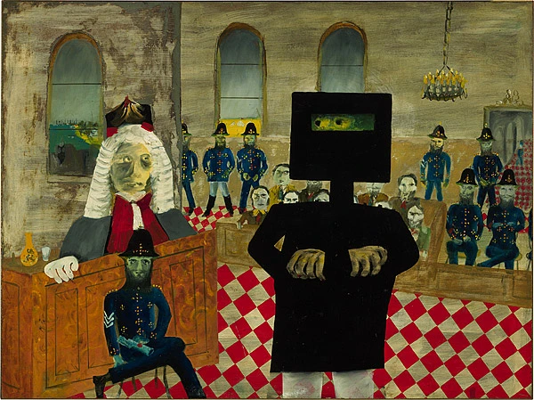

This is an essay I wrote in 2005 and published in Eureka St which I don't think I've published on Troppo, and since it's my journal of record, I'm now doing so.

{kind=link}
Kelly was hanged on 11 November, a date we remember as the end of two other great moments of defiance, grand vision and grand folly.
We should also have spared a thought for another November death. After surviving two years’ hard labour which nearly killed him, Oscar Wilde left England for the Continent, where he died just a few years later, on 30 November 1900.
The contrasts between Kelly and Wilde could not be more obvious. But their lives bear uncanny symmetries from the trivial to the profound.
Both counted themselves sons of Ireland, and shared both the month of their deaths and year of their birth, 1854.
The generous and unsuspecting nature of each was central to his downfall—Ned in his trust of the schoolteacher Curnow who flagged down the train, and Oscar in his extravagant gifts to rent-boys that so incriminated him in court.
Both were innovators never successfully imitated.
Wilde’s jokes were and often still are regarded as stilted, sitting uneasily with the content of his plays. Yet they are like depth charges, unsettling established meanings, and doing what religious texts often do—prompting new understanding through contradiction and paradox. Kelly was an innovator with his own criminal escapades, turning bank robberies, remarkably enough, into weekend social events—occasions for improvised partying and propaganda.
As recent scholarship illustrates, there was a much stronger political undercurrent to the events surrounding both Ned and Oscar’s triumphs and tragedies than is often supposed.
McKenna’s recent biography of Wilde draws out the political radicalism of Wilde’s leadership of ‘the cause’ for the liberation of men who loved men, uncovering plenty of evidence both of Wilde’s brazen subversiveness and of real concern at the highest levels of society about the outbreak of ‘Greek love’ of which Wilde was the figurehead.
So too, the ‘Kelly outbreak’ was no simple matter of four outlaws in the hills. Born in the aftermath of the Eureka Stockade, Kelly became an inchoate republican revolutionary. And the authorities had so mishandled the situation that Kelly had enough sympathisers to have created a bloodbath in Northern Victoria of grander scale than Eureka. While our heart goes out to Ned as the underdog, our head reminds us to be grateful that Glenrowan was the fiasco it was.
But Oscar and Ned share something much deeper.
Each engineered his own demise, moving with a heedless, dreamlike courage towards the doom he had so assiduously courted. They are mythic for that courage and for the elemental nature of their story.
As they took one ineluctable step after another towards their doom, what on earth were they thinking? Given so many chances and the many warnings of their inner voices and their brothers in arms to turn back, what did they think they were doing? If we tried to envisage their lives in ‘real time’ unfolding to themselves, rather than in the mythic hindsight to which we are continually drawn, we’d conclude that they didn’t know themselves.
Picture Ned emerging from the fog of dawn walking into a hail of bullets in his terrifying and ridiculous suit of armour, walking into a trap that he had carefully and absurdly set for himself, and there you have Oscar.
Having primed himself before he met its object, Wilde’s grand passion was Bosie, son of the violent Marquis of Queensberry (today most famous for ‘Queensberry’s Rules’ in boxing), and known to be somewhat unhinged.
As Wilde knew, Queensberry was beside himself with anxiety, hostility and grief, having just lost another son, very likely from suicide, in the throes of a ‘Greek’ love affair with Lord Rosebery—the then prime minister. Oscar’s outrageous behaviour with Bosie provoked Queensberry to publicly defame him after endless warnings.
Though the words on the card Queensberry left for Wilde at his club were hard to decipher, Queensberry’s lawyers were able to argue that it said: ‘Oscar Wilde: posing as a sodomite.’ That was precisely what Oscar had been doing with Bosie.
But, becoming the vehicle for Bosie’s passionate hatred of his father, Wilde sued Queensberry for criminal libel. Like a string of ridiculous lies in Ned’s various explanations of his conduct, Oscar swore to his attorney, quite falsely, that the defamation was baseless. Yet he had been the model of indiscretion all around London for years.
Oscar’s armour against Queensberry was about as secure against counterattack as Ned’s against the police. Kelly seems to have conceived what became his last stand as an act of rebellion and possibly mass murder. But his innovations of armour and of the robbery as town party now played their part in his downfall. Like a baddie in a bad movie, Kelly didn’t properly supervise the arrival of the train. He was partying in the pub!
Wilde was cross-examined by fellow Irishman Edward Carson QC—an acquaintance in childhood and a good friend of Wilde’s at Trinity College, Dublin. Carson sighed to his wife after Wilde’s case against Queensberry had collapsed: ‘I have ruined the most brilliant man in London.’ Like Christ and Socrates, Oscar was begged by his friends to flee. But he seemed caught in indecision. Shortly before his arrest at 6.20pm he resigned himself to his fate, observing: ‘The train has gone.’ There were four more trains to Paris yet to depart that evening.
Ned, too, embraced the heroism of his last stand, though what happened that night is murky and surreal. He was shot several times early on in the siege of the inn. Joe Byrne was overheard telling Ned, as he’d told him before, that the armour was always going to bring them to grief.
Even with the lifeblood having drained from his best friend Joe Byrne, with his brother and Steve Hart inside the inn, the story told by Kelly’s biographer Ian Jones suggests that Kelly could have won the siege of Glenrowan. A cadre of sympathisers were waiting in the wings for the prompt for a north-east Victorian republican uprising. If that were so they could surely have slaughtered the police surrounding the inn, picking them off from the dark by the light of the full moon. Jones claims that Kelly told them to desist and go home—that it had now become the gang’s fight.
In Jones’s retelling, Kelly also passed up several opportunities to escape. Having bled badly for most of the night, with multiple bullet wounds through his arm and foot, Kelly put his helmet back on, walked into a hail of bullets uttering defiant and murderous abuse, apparently intending to rescue Steve and Dan in the inn.
Both Oscar and Ned’s trials were irregular in various respects, reflecting likely political interference from the highest levels to secure conviction. But both rose above their anxiety and pain to speak with courage, clarity and feeling.
Oscar had been deteriorating physically and psychologically throughout his month-long remand before his first trial. But when asked about the ‘love that dare not speak its name’, he gave us a glimpse of his legendary eloquence and of his defiance—though his words spoke more to fantasy than to the tawdry reality with which the trial was concerned. He survived his first trial with a hung jury, but, following much murmuring in the corridors of power, his second trial secured a conviction.
Kelly, in pain and disablement throughout his trial, affected a dignified stance clutching his lapel with his wounded hand. In contrast to the attorneys he had had in earlier hearings, his attorney in his murder trial was an incompetent novice.
Kelly was told the jury’s guilty decision, and Judge Redmond Barry’s inevitable death sentence was only a moment away. (Barry, an establishment Irishman, was a notorious ‘hanging judge’. Years earlier he had asserted the protection of the rule of law on Ned’s behalf by condemning a man to death for trying to burn down Ned’s family home in a fit of drunken rage. The arsonist was Ned’s uncle and his sentence was later commuted.)
After Justice Barry pronounced the death sentence, an extraordinary exchange ensued between Kelly and Barry, the latter concluding with a pompous but sincere lecture on social harmony and much else besides and Kelly responding again and again with fearless simplicity, and ultimately with his famous defiance.
After Barry’s incantation ‘May the Lord have mercy upon your soul’, Kelly responded, ‘I will go a little further than that and say I will see you there, where I go.’ He turned and blew a kiss to his friend Kate Lloyd, saying, ‘Goodbye, you’ll see me there,’ then turned and left the dock ‘appearing quite unconcerned’.
Both Ned and Oscar were acting in the service of their own myths and understood themselves to be doing so. As Oscar said, he put his talent into his work, his genius into his life. One might add that though his work was comedic, his life was grand tragedy. All this is true also of Ned.
Wilde was caught between indecision and funk, courage and mythmaking. The social disgrace that he brought down upon his own head looms like a shadow within all his successful comedies. Whatever the variations between them, their theme remains the same: social downfall and disgrace narrowly averted.
Like Wilde, Kelly too was driven to publicly justify himself, his Jerilderie letter being the most famous example. But though, as with Wilde, it was ultimately a reflection of the great dénouement of his life, Kelly’s most eloquent statement about his life’s betrayal of better hopes was not in words. As he prepared for the madness of Glenrowan, Kelly’s thoughts turned to a time in his short life when his courage and strength, both of body and of character, had been turned to better ends. When he was eleven he had saved another boy from drowning in a swollen river and was rewarded with a green sash by the boy’s grateful family. When the police removed Kelly’s armour they found the sash around his body, stained in his own blood.
The last word is Oscar’s, though perhaps he could be speaking for Ned.
All trials are trials for one’s life, just as all sentences are sentences of death, and three times I have been tried … Society as we have constituted it, will have no place for me, has none to offer; but Nature, whose sweet rains fall on just and unjust alike, will have clefts in the rocks where I may hide, and secret valleys in whose silence I may weep undisturbed. She will hang with stars so that I may walk abroad in the darkness without stumbling, and send the wind over my footprints so that none may track me to my hurt: she will cleanse me in great waters, and with bitter herbs make me whole.
Oscar has my pity and my awe. So too, despite his flaws and his criminality, does Ned. Nicholas Gruen is CEO of Lateral Economics and Peach Financial, a visiting fellow of ANU and Melbourne University, weekly columnist with the Courier-Mail and contributor to www.clubtroppo.com.au.
A sharp, insightful work of art. Never could the correctly prohibited practice of punishment, as put by Christianity, whether parable or divine, its purpose, to either ease or end, pain and suffering, regrettably part of life and this world, through extending the helping hand, we all are in need of, one of the darknesses, of humankind, so often involving the boundless tragedy of terrorism, of people's central nervous system, have been more eloquently put. Seminally, we are all cut from the same cloth. Muchas gracias.